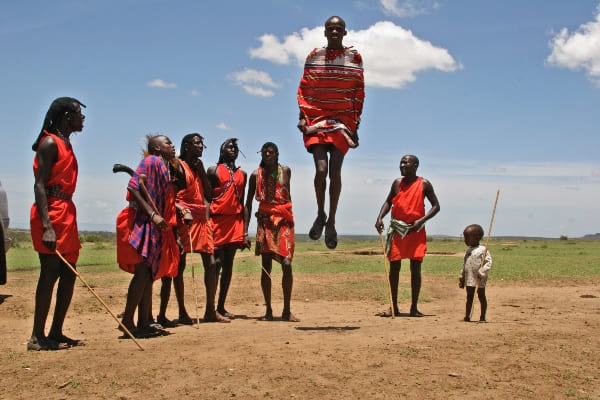

As of 2023 67.9 million people live in Tanzania, and 95% are of the Bantu ethnic group.
The Bantu started in central Africa in 2,000 BCE, in modern-day Cameroon and Nigeria. They moved to over 20 countries in an event known as the Bantu Migration. Bantu people are vastly diverse with 400 distinct languages, Zulu and Swahili are the most spoken. though the Bantu were the first to become sedentary farmers, many clung to the nomadic ways of their ancestors, like the Hadza people of northern Tanzania and the Massi who roam Southern Kenya and Northern Tanzania.
| 
| 
|